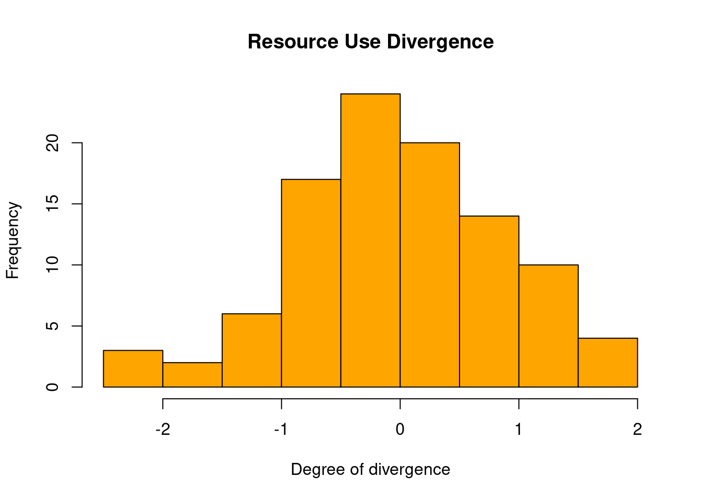
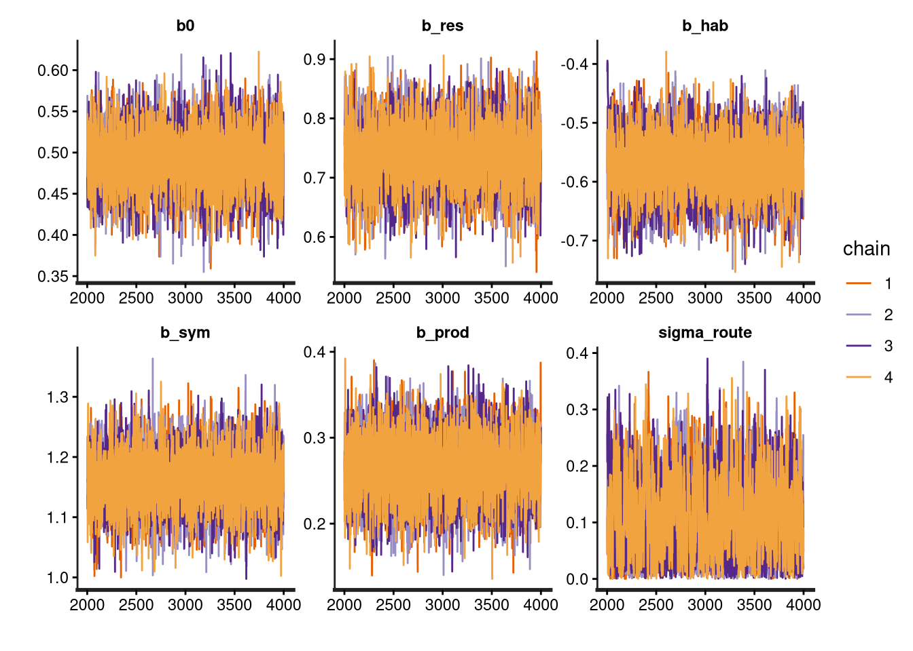

Following the framework of Remeš & Harmáčková (2023), this assignment simulates and analyses local co-occurrence (syntopy) among sister species of birds. In evolutionary ecology, syntopy is the final stage of the speciation cycle, during which two sister species meet at the same sites. I model the co-occurrence probability at local sites as a function of ecological and spatial predictors. This idea is connected to the topic of my master’s thesis, where I model syntopy at two spatial scales (routes and stops) using BBS (Breeding Bird Survey) data for passerines and range maps from eBird Status & Trends.
To measure syntopy accurately, we need to consider only sites within the range overlap for the analysis. We can imagine the range overlap being the jar, from which we randomly draw balls (sites). There are four possible outcomes of that draw: 1) both species are present, 2) species A is present, 3) species B is present, or 4) both species are missing at the site. To measure the degree of species co-occurrence, we use the log-odds ratio because it centers the odds ratio around zero, making the scale linear.
If we want to model this problem using Bayesian methods, we can follow the approach in Newbury (2024), but we will not include random effects in the model and will use only a simple Bayesian linear regression. The most accurate probability distribution for our problem is Fisher’s non-central hypergeometric distribution, where N denotes the population size (number of sites within the sympatric zone), K is the number of co-occurrence states (K = 4), n is the number of draws, and k is the number of co-occurrences. This distribution is accurate because the sampling is carried out without replacement (unlike the binomial distribution), which reflects the true nature of the problem, given the limited number of pairs.
NoteGoals
Generate dream data for 100 pairs using Fisher’s hypergeometric distribution for both scales (routes and stops).
Visualize and explore generated data.
Fit models for both scales using ulam function and compare the estimates with true values.
Data Simulation
To satisfy the assignment’s complexity requirements, I define 5 true parameters that dictate the data-generating process:
\(\beta_{0} = 0.5\) (Baseline log-odds of co-occurrence; slight facilitation)
\(\beta_{res.div} = 0.8\) (Resource use divergence: greater divergence increases syntopy)
\(\beta_{hab.pref} = -0.6\) (Difference in micro-habitat and environmental preference decreases syntopy)
\(k_i\) = number of sites where both species co-occur
\(m_{1i}\) = total number of sites where species A is present for pair \(i\)
\(m_{2i}\) = total number of sites where species B is present for pair \(i\)
\(N_i\) = total number of sites sampled within the sympatric range of pair \(i\)
\(ω_i\) = the conditional co-occurrence odds ratio for pair \(i\)
Data Generation
I want to simulate data resembling the study design of BBS (~40km long routes, each having 50 stops). Therefore I need to create two data sets:
1) route scale (looking at syntopy across transects within the range overlap)
2) stop scale (looking at syntopy within transects)
For the Fisher’s hypergeometric distribution we can use the library BiasedUrn, for the modeling we will use rethinking and rstan.
Route Scale
For the number of sites I choose a negative binomial distribution, because it is an integer and I know that there is a long tail on the right site of the distribution.
num_pairs <-100route_occupancy <-function(num_pairs){# simulates the occupancy of species across N routes# N of routes N <-rnbinom(n = num_pairs, mu = num_pairs, size =2)# Probability distribution for species occupancy prob_m1 <-rbeta(num_pairs, shape1 =1, shape2 =2) prob_m2 <-rbeta(num_pairs, shape1 =1, shape2 =2)# Species occupancy m1 <-rbinom(num_pairs, size = N, prob = prob_m1) m2 <-rbinom(num_pairs, size = N, prob = prob_m2)list(N=N, m1=m1, m2=m2)}route_oc <-route_occupancy(num_pairs = num_pairs)hist(route_oc$N, breaks =12, main="N Sites Distribution", xlab="Number of sites for sister pair", col="purple")
Some species pairs have very large number of sampled sites, while some of them have just a few sampled sites within the sympatric range. We can check the parameters of the distribution:
summary(route_oc$N)
Min. 1st Qu. Median Mean 3rd Qu. Max.
3.00 37.00 73.00 89.89 128.75 407.00
We can also check the occupancy distribution of the first species set in the pairs:
Let’s continue with the generation of parameter values. First I will generate three already standardized variables using normal distribution.
X_res_div <-rnorm(num_pairs, mean =0, sd =1) # X1X_hab_pref <-rnorm(num_pairs, mean =0, sd =1) # X2X_prod <-rnorm(num_pairs, mean =0, sd =1) # X3hist(X_res_div, breaks =12, main="Resource Use Divergence", xlab="Degree of divergence", col="orange")

For the degree of sympatry (% of range overlap) I need to generate specific distribution as x > 5 (minimum degree for sympatry is typically 5 %) and x <= 100. As I want the values to have decimals and I need a strict upper limit I have to use beta distribution.
# There are 4 pairs with a very high difference in occupancy between species
Higher abundance among sister pairs (e.g. 80 occupied routes from 100, together at 64) can lead to the situation when both species in the pair tend to co-occur more likely simply because they are present everywhere - therefore their co-occurrence affinity will be incomparable with the species which co-occur despite being rare in general (e.g. 5 routes from 100, together at 4).
This problem of prevalence can happen if we measure co-occurrence with widely used indices of similarity (e.g., Jaccard, Simpson). Bayesian inference elegantly solves this problem as it proportionately weights the relative abundances of species.
# Add unique IDs, true odds ratio and true log-odds ratioroute_data$pair_id <-1:nrow(route_data)route_data$OR <- omegaroute_data$log_OR <- log_omegaroute_data[route_data$m1 ==0& route_data$m2 ==0,]
There are 2 routes with zero occupancy, so called double zeros. Double zeros could mean two things. Either both species are truly absent at the route (true negatives) or they were not detected during the survey (false negatives). Given that route is within their range zone and there were 50 points where at least one of the species could have been detected, it should be more likely that they were simply not there. However, because these data are generated, we have pair’s true odds ratio. If we would calculate odds ratio only from occupancy data, we would end up with infinity value.
Stop Scale
Next step is to simulate point scale data based on the data for routes, which we already have. I choose to filter only pairs which have k >= 1, because there is no reason to calculate syntopy on transect where is 0 possibility of co-occurrence.
# Select only rows where k >= 1valid_route_data <- route_data[route_data$k >=1, ]# Initialize empty list and counter for fast executiondatalist <-list()counter <-1for (row_idx in1:nrow(valid_route_data)) {# Extract pair metadata and parameters current_pair <- valid_route_data$pair_id[row_idx] num_routes <- valid_route_data$k[row_idx] local_omega <- valid_route_data$OR[row_idx] # using same omega as for the routes# Calculate the realized regional occupancy rates for this specific pair rate_A <- valid_route_data$m1[row_idx] / valid_route_data$N[row_idx] rate_B <- valid_route_data$m2[row_idx] / valid_route_data$N[row_idx]# Loop through each of those specific co-occurring transectsfor (t in1:num_routes) { S_total <-50# Generate local point occupancy probabilities using the pair's regional rates local_prob_A <-rbeta(1, shape1 = rate_A *5, shape2 = (1- rate_A) *5) local_prob_B <-rbeta(1, shape1 = rate_B *5, shape2 = (1- rate_B) *5)# Boundary protection to prevent 0 or 1 probabilities local_prob_A <-max(0.01, min(0.99, local_prob_A)) local_prob_B <-max(0.01, min(0.99, local_prob_B))# Draw stop-scale occupancy counts bounded by 50 points s_m1 <-rbinom(1, size = S_total, prob = local_prob_A) s_m2 <-rbinom(1, size = S_total, prob = local_prob_B)# Safety floor: since they co-occurred on this transect, they must occupy >= 1 point s_m1 <-max(1, s_m1) s_m2 <-max(1, s_m2)# Draw realized stop co-occurrences using Fisher's Noncentral Hypergeometric s_k <-rFNCHypergeo(1, s_m1, S_total - s_m1, s_m2, local_omega)# Wrap it up in the list datalist[[counter]] <-data.frame(route_id =paste0("Pair_",current_pair, "_Route_", t),pair_id = current_pair,S_total = S_total,m1_stops = s_m1,m2_stops = s_m2,k_stops = s_k ) counter <- counter +1 }}data <-do.call(rbind, datalist)head(data)
Finally, we join our data with the generated parameters for each pair we already have in route_data.
# Start with the simulated data (which naturally excludes k = 0 pairs)stop_data <- data |>select(pair_id, route_id, S_total, m1_stops, m2_stops, k_stops) |>left_join(# Pull ONLY the environmental covariates from route_data route_data |>select(pair_id, res_div, hab_pref, prod, sympatry), by ="pair_id" )# Verify the clean data framehead(stop_data)
We have prepared our data and now we can run some models using the ulam() function from rethinking package. There are several steps we need to take to get the output:
Wrap up data into list, so ulam can read it
Import the separate file for Fishers’s non-central hypergeometric likelihood.
Set up the model formula in ulam.
Transform the code into stan syntax.
Run the model using stan() function from rstan package.
Route Scale Model
dat_list <-list(k = route_data$k,m1 = route_data$m1,m2 = route_data$m2,N = route_data$N,res_div = route_data$res_div,hab_pref = route_data$hab_pref,prod = route_data$prod,sympatry = route_data$sympatry)# Read separate stan file and wrap it in the required Stan syntaxlikelihood_pmf <-paste("functions {",paste(readLines("fisher_nchyper_lpmf.stan"), collapse ="\n"),"}",sep ="\n")# Model settingsmodel <-ulam(alist(# Likelihood k ~custom( fisher_hyper_lpmf(k[i] |exp(log_omega[i]), m1[i], m2[i], N[i]) ),# Linear Predictor log_omega <- b0 + b_res*res_div + b_hab*hab_pref + b_prod*prod + b_sym*sympatry,# Priors b0 ~dnorm(0, 10), b_res ~dnorm(0, 10), b_hab ~dnorm(0, 10), b_sym ~dnorm(0, 10), b_prod ~dnorm(0, 10) ), data = dat_list, sample =FALSE# Generate text for stan, not sampling yet)# Extract the autogenerated textstan_code <-stancode(model)
data{
int N[100];
int m2[100];
int m1[100];
int k[100];
vector[100] sympatry;
vector[100] prod;
vector[100] hab_pref;
vector[100] res_div;
}
parameters{
real b0;
real b_res;
real b_hab;
real b_sym;
real b_prod;
}
model{
vector[100] log_omega;
b_prod ~ normal( 0 , 10 );
b_sym ~ normal( 0 , 10 );
b_hab ~ normal( 0 , 10 );
b_res ~ normal( 0 , 10 );
b0 ~ normal( 0 , 10 );
for ( i in 1:100 ) {
log_omega[i] = b0 + b_res * res_div[i] + b_hab * hab_pref[i] + b_prod * prod[i] + b_sym * sympatry[i];
}
for ( i in 1:100 ) target += fisher_hyper_lpmf(k[i] | exp(log_omega[i]), m1[i], m2[i], N[i]);
}
# Paste the file-loaded functions block to the top of the text stringfull_stan_code <-paste0(likelihood_pmf, "\n", stan_code)# Run the compiled model using rstanout_routes <-stan(model_code = full_stan_code,data = dat_list,chains =4, cores =4,iter =4000,seed =1,refresh =0# <--- Turns off the iteration progress tracker)
Trying to compile a simple C file
Running /usr/lib64/R/bin/R CMD SHLIB foo.c
using C compiler: ‘gcc (GCC) 16.1.1 20260515 (Red Hat 16.1.1-2)’
gcc -I"/usr/include/R" -DNDEBUG -I"/usr/local/lib/R/library/Rcpp/include/" -I"/usr/local/lib/R/library/RcppEigen/include/" -I"/usr/local/lib/R/library/RcppEigen/include/unsupported" -I"/usr/local/lib/R/library/BH/include" -I"/usr/local/lib/R/library/StanHeaders/include/src/" -I"/usr/local/lib/R/library/StanHeaders/include/" -I"/usr/local/lib/R/library/RcppParallel/include/" -I/usr/include/oneapi -DTBB_INTERFACE_NEW -I"/usr/local/lib/R/library/rstan/include" -DEIGEN_NO_DEBUG -DBOOST_DISABLE_ASSERTS -DBOOST_PENDING_INTEGER_LOG2_HPP -DSTAN_THREADS -DUSE_STANC3 -DSTRICT_R_HEADERS -DBOOST_PHOENIX_NO_VARIADIC_EXPRESSION -D_HAS_AUTO_PTR_ETC=0 -include '/usr/local/lib/R/library/StanHeaders/include/stan/math/prim/fun/Eigen.hpp' -D_REENTRANT -DRCPP_PARALLEL_USE_TBB=1 -I/usr/local/include -fpic -O2 -flto=auto -ffat-lto-objects -fexceptions -g -grecord-gcc-switches -pipe -Wall -Werror=format-security -Wp,-U_FORTIFY_SOURCE,-D_FORTIFY_SOURCE=3 -Wp,-D_GLIBCXX_ASSERTIONS -specs=/usr/lib/rpm/redhat/redhat-hardened-cc1 -fstack-protector-strong -specs=/usr/lib/rpm/redhat/redhat-annobin-cc1 -m64 -march=x86-64 -mtune=generic -fasynchronous-unwind-tables -fstack-clash-protection -fcf-protection -mtls-dialect=gnu2 -fno-omit-frame-pointer -mno-omit-leaf-frame-pointer -c foo.c -o foo.o
In file included from /usr/local/lib/R/library/RcppEigen/include/Eigen/Core:19,
from /usr/local/lib/R/library/RcppEigen/include/Eigen/Dense:1,
from /usr/local/lib/R/library/StanHeaders/include/stan/math/prim/fun/Eigen.hpp:22,
from <command-line>:
/usr/local/lib/R/library/RcppEigen/include/Eigen/src/Core/util/Macros.h:679:10: fatal error: cmath: No such file or directory
679 | #include <cmath>
| ^~~~~~~
compilation terminated.
make: *** [/usr/lib64/R/etc/Makeconf:190: foo.o] Error 1
First we can check the convergence of chains.
traceplot(out_routes, pars =c("b0", "b_res", "b_hab", "b_sym", "b_prod"))
Our model estimates for most parameters are very good, however the intercept (baseline log-odds ratio) is a bit underestimated despite the credible interval includes the true value (0.5).
Stop Scale Model
# Map character route IDs to sequential integers for Stan indexingstop_data$route_index <-as.integer(as.factor(stop_data$route_id))dat_list_stops <-list(k_stops = stop_data$k_stops,m1_stops = stop_data$m1_stops,m2_stops = stop_data$m2_stops,S_total = stop_data$S_total,res_div = stop_data$res_div,hab_pref = stop_data$hab_pref,prod = stop_data$prod,sympatry = stop_data$sympatry,route_index = stop_data$route_index)# Model Settingsmodel_stops <-ulam(alist(# Likelihood using stop-level data arrays k_stops ~custom( fisher_hyper_lpmf(k_stops[i] |exp(log_omega[i]), m1_stops[i], m2_stops[i], S_total[i]) ),# Linear Predictor: Pair baseline + Route random effect deviationlog_omega <- b0 + b_res*res_div + b_hab*hab_pref + b_prod*prod + b_sym*sympatry + (z_route[route_index] * sigma_route),# Fixed Effect Priors b0 ~dnorm(0, 10), b_res ~dnorm(0, 10), b_hab ~dnorm(0, 10), b_sym ~dnorm(0, 10), b_prod ~dnorm(0, 10),# Adaptive Priors# Non-Centered Random Effect Layer# z_route is a completely standard, clean vector array z_route[route_index] ~dnorm(0, 1), sigma_route ~dexp(1)# exponential distribution forces sigma_route# to be strictly positive (since a standard deviation cannot be negative) ), data = dat_list_stops, sample =FALSE# Generate text for stan, not sampling yet)# Extract the autogenerated textstan_code_stops <-stancode(model_stops)
data{
int S_total[829];
int m2_stops[829];
int m1_stops[829];
int k_stops[829];
int route_index[829];
vector[829] sympatry;
vector[829] prod;
vector[829] hab_pref;
vector[829] res_div;
}
parameters{
real b0;
real b_res;
real b_hab;
real b_sym;
real b_prod;
vector[829] z_route;
real<lower=0> sigma_route;
}
model{
vector[829] log_omega;
sigma_route ~ exponential( 1 );
z_route ~ normal( 0 , 1 );
b_prod ~ normal( 0 , 10 );
b_sym ~ normal( 0 , 10 );
b_hab ~ normal( 0 , 10 );
b_res ~ normal( 0 , 10 );
b0 ~ normal( 0 , 10 );
for ( i in 1:829 ) {
log_omega[i] = b0 + b_res * res_div[i] + b_hab * hab_pref[i] + b_prod * prod[i] + b_sym * sympatry[i] + (z_route[route_index[i]] * sigma_route);
}
for ( i in 1:829 ) target += fisher_hyper_lpmf(k_stops[i] | exp(log_omega[i]), m1_stops[i], m2_stops[i], S_total[i]);
}
# Paste the file-loaded functions block to the top of the text stringfull_stan_code_stops <-paste0(likelihood_pmf, "\n", stan_code_stops)# Run the compiled model using rstanout_stops <-stan(model_code = full_stan_code_stops,data = dat_list_stops,chains =4, cores =4,iter =4000,seed =1,refresh =0# <--- Turns off the iteration progress tracker)
Trying to compile a simple C file
Running /usr/lib64/R/bin/R CMD SHLIB foo.c
using C compiler: ‘gcc (GCC) 16.1.1 20260515 (Red Hat 16.1.1-2)’
gcc -I"/usr/include/R" -DNDEBUG -I"/usr/local/lib/R/library/Rcpp/include/" -I"/usr/local/lib/R/library/RcppEigen/include/" -I"/usr/local/lib/R/library/RcppEigen/include/unsupported" -I"/usr/local/lib/R/library/BH/include" -I"/usr/local/lib/R/library/StanHeaders/include/src/" -I"/usr/local/lib/R/library/StanHeaders/include/" -I"/usr/local/lib/R/library/RcppParallel/include/" -I/usr/include/oneapi -DTBB_INTERFACE_NEW -I"/usr/local/lib/R/library/rstan/include" -DEIGEN_NO_DEBUG -DBOOST_DISABLE_ASSERTS -DBOOST_PENDING_INTEGER_LOG2_HPP -DSTAN_THREADS -DUSE_STANC3 -DSTRICT_R_HEADERS -DBOOST_PHOENIX_NO_VARIADIC_EXPRESSION -D_HAS_AUTO_PTR_ETC=0 -include '/usr/local/lib/R/library/StanHeaders/include/stan/math/prim/fun/Eigen.hpp' -D_REENTRANT -DRCPP_PARALLEL_USE_TBB=1 -I/usr/local/include -fpic -O2 -flto=auto -ffat-lto-objects -fexceptions -g -grecord-gcc-switches -pipe -Wall -Werror=format-security -Wp,-U_FORTIFY_SOURCE,-D_FORTIFY_SOURCE=3 -Wp,-D_GLIBCXX_ASSERTIONS -specs=/usr/lib/rpm/redhat/redhat-hardened-cc1 -fstack-protector-strong -specs=/usr/lib/rpm/redhat/redhat-annobin-cc1 -m64 -march=x86-64 -mtune=generic -fasynchronous-unwind-tables -fstack-clash-protection -fcf-protection -mtls-dialect=gnu2 -fno-omit-frame-pointer -mno-omit-leaf-frame-pointer -c foo.c -o foo.o
In file included from /usr/local/lib/R/library/RcppEigen/include/Eigen/Core:19,
from /usr/local/lib/R/library/RcppEigen/include/Eigen/Dense:1,
from /usr/local/lib/R/library/StanHeaders/include/stan/math/prim/fun/Eigen.hpp:22,
from <command-line>:
/usr/local/lib/R/library/RcppEigen/include/Eigen/src/Core/util/Macros.h:679:10: fatal error: cmath: No such file or directory
679 | #include <cmath>
| ^~~~~~~
compilation terminated.
make: *** [/usr/lib64/R/etc/Makeconf:190: foo.o] Error 1
Warning: There were 11 divergent transitions after warmup. See
https://mc-stan.org/misc/warnings.html#divergent-transitions-after-warmup
to find out why this is a problem and how to eliminate them.
Warning: Examine the pairs() plot to diagnose sampling problems
There were several warnings at the and of the sampling, that some chains did not converged in an optimal way so we first check the traceplot for the main parameters.
traceplot(out_stops, pars =c("b0", "b_res", "b_hab", "b_sym", "b_prod", "sigma_route"))

Now we can take a look at the parameter estimates.
precis(out_stops, pars =c("b0", "b_res", "b_hab", "b_sym", "b_prod", "sigma_route"))
# Extract posterior sample drawspost_stops <-extract.samples(out_stops)n_samples <-length(post_stops$b0)n_rows <-nrow(stop_data)# Create an empty matrix to hold log-odds (rows = post-samples, cols = stop_data rows)log_omega_routes <-matrix(NA, nrow = n_samples, ncol = n_rows)# Reconstruct log_omega per transect by pulling pair fixed effects and adding local random noisefor(i in1:n_rows) { pair_base <- post_stops$b0 + post_stops$b_res * stop_data$res_div[i] + post_stops$b_hab * stop_data$hab_pref[i] + post_stops$b_sym * stop_data$sympatry[i] + post_stops$b_prod * stop_data$prod[i]# Manually reconstruct the route deviation from the non-centered samples current_route_idx <- stop_data$route_index[i] reconstructed_a_route <- post_stops$z_route[, current_route_idx] * post_stops$sigma_route# Total local log-odds ratio log_omega_routes[, i] <- pair_base + reconstructed_a_route}# 1. Compute and assign the estimated log-odds ratio back to each individual transect rowstop_data$estimated_local_log_OR <-colMeans(log_omega_routes)# 2. Average the estimated log-odds values for each distinct pair_idpair_level_averages <-aggregate(estimated_local_log_OR ~ pair_id, data = stop_data, FUN = mean)print(head(pair_level_averages))
Remeš, V. and Harmáčková, L. (2023), Resource use divergence facilitates the evolution of secondary syntopy in a continental radiation of songbirds (Meliphagoidea): insights from unbiased co-occurrence analyses. Ecography, 2023: e06268. https://doi.org/10.1111/ecog.06268
Newbury, A. (2024). Bayesian estimation of co-occurrence affinity with dyadic regression. bioRxiv. https://doi.org/10.1101/2024.01.16.575941
Haldane, J. B. S. (1956). The estimation and significance of the logarithm of a ratio of frequencies. Annals of Human Genetics, 20(4), 309-311.
Anscombe, F. J. (1956). On estimating binomially distributed populations. Biometrika, 43(3/4), 461-464. :::